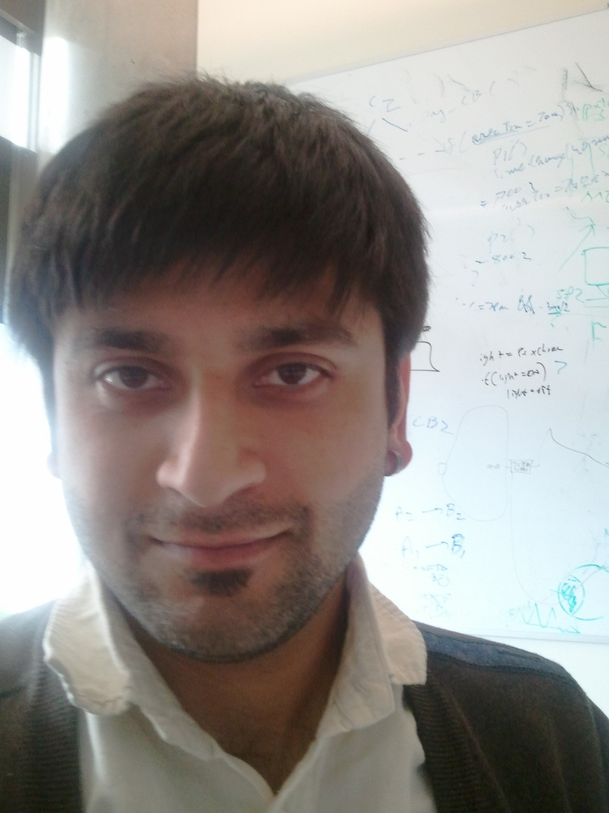

Current projects More projects →
Recent papers Complete list | By topic | Google Scholar
-
Network Change Validation with Relational NetKAT
POPL, 2026
-
Self-Defining Systems
White paper, 2025
-
Programmable and Adaptive Scheduling for Distributed Systems
HotNets, 2025
Current students More students →
- Tapan Chugh
- Xiangyu Gao (postdoc)
- Wei Shen
- Yuyao Wang
- Dan Wang (visiting from Xi'an Jiaotong)
- Xiangfeng Zhu
Recent teaching More teacihng →
-
CSE 461: Introduction to Computer NetworksSenior-level undergraduate course on computer networking
-
CSE 550: Systems for AllGraduate-level breadth course on foundations of computer systems
-
CSE 561: Computer Communication and NetworksGraduate-level course on recent research in computer networks
Recent talks More talks →
Selected professional service More service →
- PC chair: SIGCOMM 2020, NSDI 2014, IMC 2012, HotNets 2009
- PC member: SIGCOMM 2026, NSDI 2026, OSDI 2025, SIGCOMM 2024
- Steering committee: IMC [2014-2018]